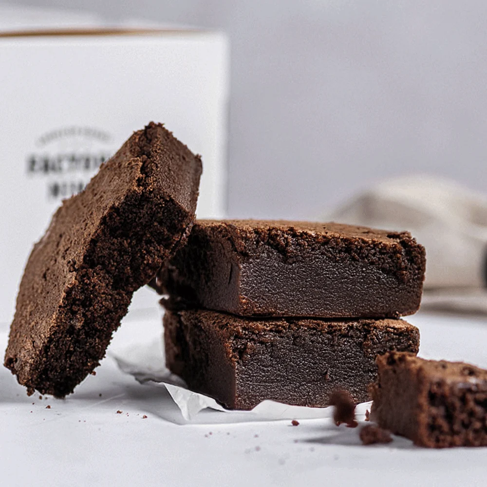

Brownie Clásico de Chocolate

El brownie clásico de chocolate es uno de los postres más populares de la repostería. Su característica textura húmeda y densa, combinada con el intenso sabor del chocolate, lo convierte en un dulce perfecto para disfrutar en cualquier momento. Esta receta es sencilla de preparar y no requiere técnicas complicadas, por lo que es ideal tanto para quienes están comenzando en la repostería como para quienes buscan un postre casero y delicioso.